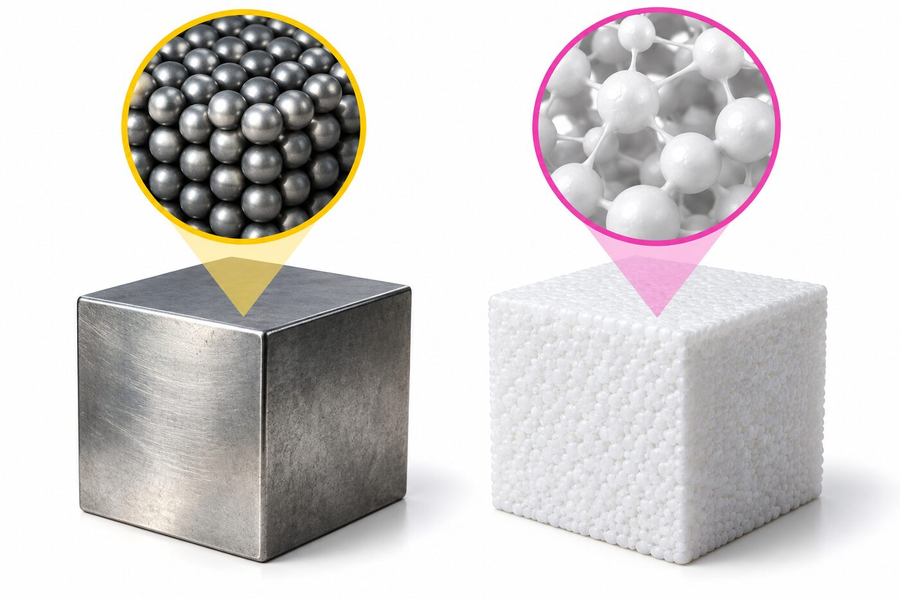
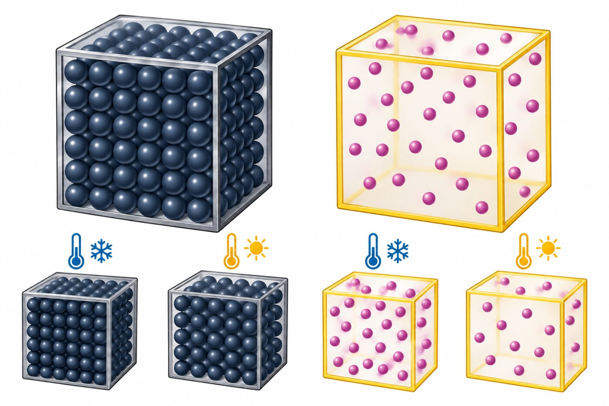
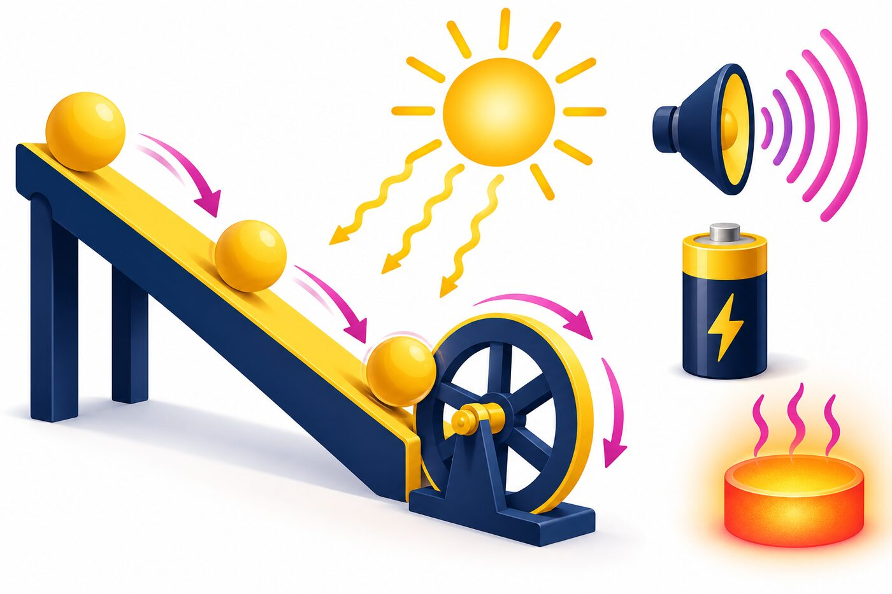
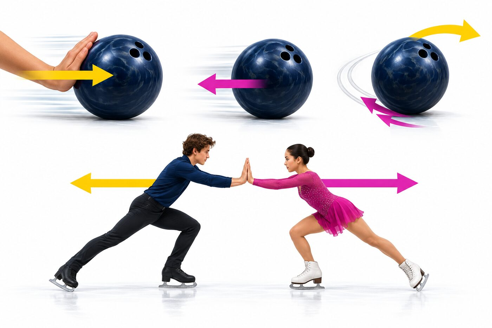
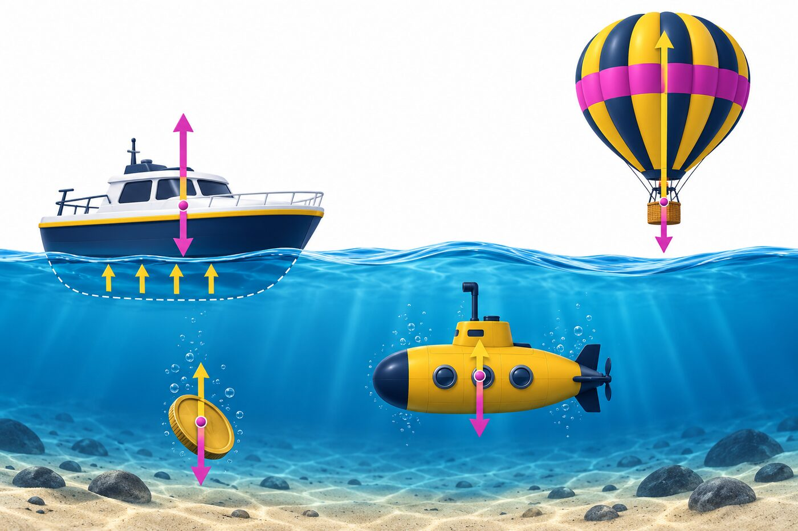
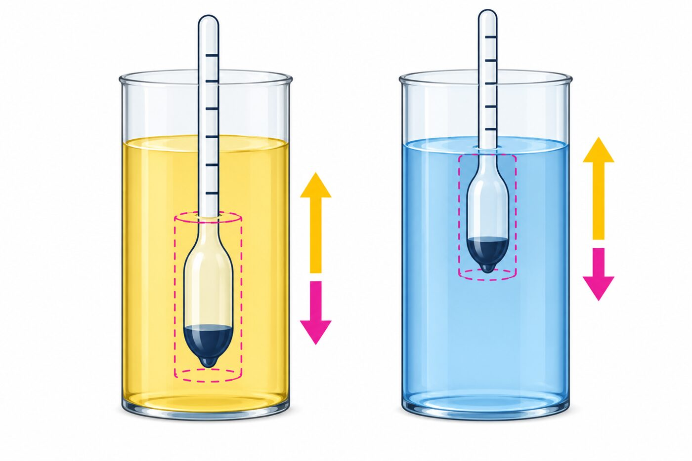
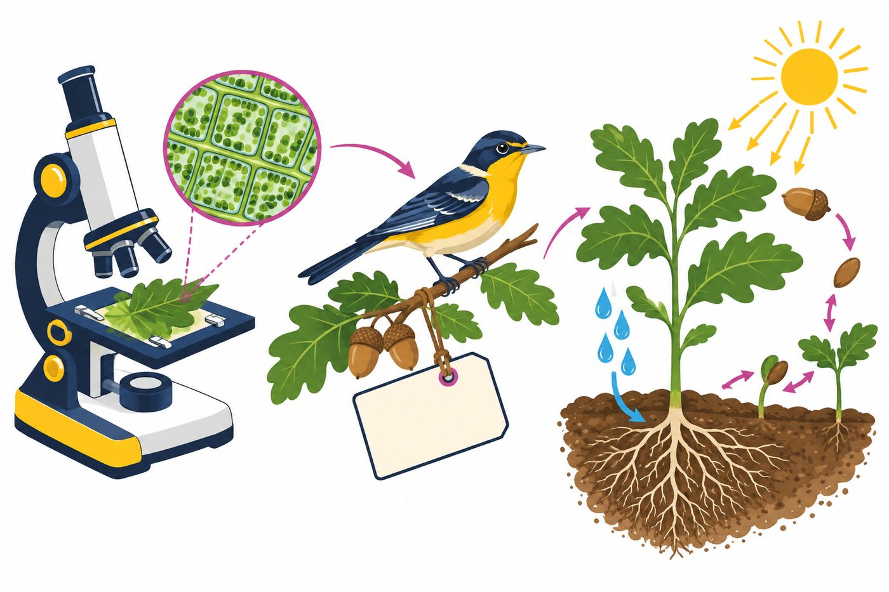

1IBK · LZK · 09.03.2026
1IBK · LZK · 09.03.2026Naturwissenschaften · Natural Sciences
Materie, Energie, Kräfte und Biologie
Matter, energy, forces and biology
1IBK · LZK · 09.03.2026In a solid the particles sit close and in order. In a liquid they stay close but slide past each other. In a gas they fly far apart.
Ü 3.18: water at −30 °C is solid.
At 20 °C it is liquid.
At 130 °C it is a gas.
Im Feststoff liegen die Teilchen dicht und geordnet. In der Flüssigkeit bleiben sie nah, gleiten aber aneinander vorbei. Im Gas fliegen sie weit auseinander.
Ü 3.18: Wasser bei −30 °C ist fest.
Bei 20 °C ist es flüssig.
Bei 130 °C ist es gasförmig.
| State · Zustand | Shape · Form | Volume · Volumen |
|---|---|---|
| solid · fest | fixed · konstant | fixed · konstant |
| liquid · flüssig | takes the container · passt sich an | fixed · konstant |
| gas · gasförmig | takes the container · passt sich an | fills it · füllt alles |
| plasma · Plasma | changes · variabel | changes · variabel |
| Substance · Stoff | Melts at · Schmelzpunkt | Boils at · Siedepunkt |
|---|---|---|
| Helium | none at 1 bar · keiner | −269 °C |
| Nitrogen · Stickstoff | −210 °C | −196 °C |
| Water · Wasser | 0 °C | 100 °C |
| Lead · Blei | 327 °C | 1749 °C |
| Tungsten · Wolfram | 3422 °C | 5555 °C |

Same volume, more mass, higher density. That is why a steel cube is heavier than a polystyrene cube of the same size.
Ü 3.9: a room is 9 m × 7 m × 3.6 m.
V = 226.8 m³
m = ρ · V = 1.2 · 226.8 = 272.16 kg of air
Gleiches Volumen, mehr Masse, höhere Dichte. Darum ist ein Stahlwürfel schwerer als ein gleich großer Styroporwürfel.
Ü 3.9: Ein Raum ist 9 m × 7 m × 3,6 m groß.
V = 226,8 m³
m = ρ · V = 1,2 · 226,8 = 272,16 kg Luft
| Material | Density · Dichte |
|---|---|
| air · Luft (20 °C) | 1.2 kg/m³ |
| spruce · Fichte | 500 kg/m³ |
| water · Wasser | 1000 kg/m³ |
| platinum · Platin | 21 450 kg/m³ |
| Group · Gruppe | Examples · Beispiele |
|---|---|
| conductors · Leiter | silver, copper, aluminium |
| semiconductors · Halbleiter | silicon, germanium |
| insulators · Isolatoren | rubber, glass, porcelain, air |
| electrolytes · Elektrolyte | salt water (ions) |


Energy never disappears. It only changes form. Heating 1 kg of water by 1 °C takes about 4190 J.
Ü 3.15: a compass needle turns north.
That is magnetic energy.
Energie verschwindet nie. Sie wechselt nur die Form. Um 1 kg Wasser um 1 °C zu erwärmen, braucht man etwa 4190 J.
Ü 3.15: Eine Kompassnadel dreht sich nach Norden.
Das ist magnetische Energie.
| Form | Example · Beispiel |
|---|---|
| mechanical · mechanisch | bungee rope, vase on a shelf |
| acoustic · akustisch | thunder |
| electrical · elektrisch | phone battery |
| thermal · thermisch | global warming |
| nuclear · Kernenergie | nuclear fission |
| radiant · Strahlung | X-ray image |
| magnetic · magnetisch | compass needle |

Draw a force as an arrow. The arrow points where the force pushes, and its length shows how strong it is.
Ü 3.25: m = 3 kg, a = 2 m/s²
F = 3 · 2 = 6 N
Zeichne eine Kraft als Pfeil. Er zeigt in die Richtung der Kraft, und seine Länge zeigt, wie stark sie ist.
Ü 3.25: m = 3 kg, a = 2 m/s²
F = 3 · 2 = 6 N
| In the car · Im Auto | You feel · Du spürst | Why · Warum |
|---|---|---|
| speeding up · Anfahren | pushed back · nach hinten gedrückt | inertia · Trägheit |
| braking · Bremsen | thrown forward · nach vorne | inertia · Trägheit |
| turning · Kurve | pushed outward · nach außen | inertia · Trägheit |

Weight is F_G = m · g with g ≈ 10 m/s². Buoyancy is F_A = ρ · V · g. Compare the two arrows to see what happens.
Ü 3.32: a 500 kg submarine wants to hover.
F_G = 500 · 10 = 5000 N, so F_A must be 5000 N.
V = 5000 / (1000 · 10) = 0.5 m³ of water
Die Gewichtskraft ist F_G = m · g mit g ≈ 10 m/s². Der Auftrieb ist F_A = ρ · V · g. Vergleiche die zwei Pfeile.
Ü 3.32: Ein U-Boot mit 500 kg soll schweben.
F_G = 500 · 10 = 5000 N, also muss F_A 5000 N sein.
V = 5000 / (1000 · 10) = 0,5 m³ Wasser


Every species has a two-part scientific name. This is binomial nomenclature. The first word is the genus, the second the species epithet.
Ü 4.1: a real elephant has cells and a metabolism.
It grows, reacts and reproduces. The toy does none of it.
Jede Art hat einen zweiteiligen Namen. Das ist die binäre Nomenklatur. Das erste Wort ist die Gattung, das zweite die Art.
Ü 4.1: Ein echter Elefant hat Zellen und Stoffwechsel.
Er wächst, reagiert und pflanzt sich fort. Das Spielzeug kann nichts davon.
| Field · Teilgebiet | Studies · erforscht |
|---|---|
| zoology · Zoologie | animals · Tiere |
| botany · Botanik | plants · Pflanzen |
| microbiology · Mikrobiologie | microorganisms · Mikroorganismen |
| ecology · Ökologie | organisms and environment · Umweltbeziehungen |
| Characteristics of life · Kennzeichen des Lebens | Example · Beispiel |
|---|---|
| cells · Zellen | bacteria have one, humans many |
| metabolism · Stoffwechsel | plants turn CO₂ and water into oxygen |
| reacting to stimuli · Reizbarkeit | pupils shrink in bright light |
| reproduction · Fortpflanzung | offspring inherit genes |
| movement · Bewegung | a plant grows toward light |
| growth · Wachstum | cells divide |